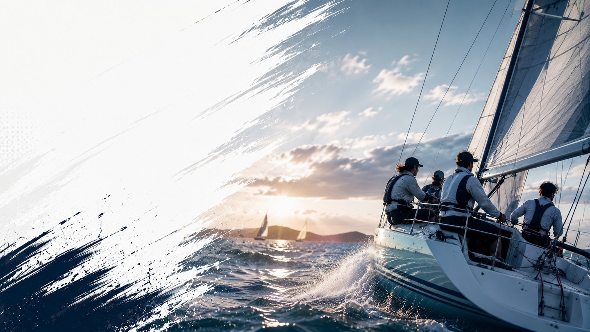

全国9水域の大学ヨット
大学ヨット部の加盟大学・大会カレンダー・成績PDFをまとめて探せる
加盟大学46校・成績PDFリンク20件を毎日巡回・検知 | 最終更新 2026-08-20
新着成績PDF
全日本学生ヨット連盟の水域大会成績ページで新しく公開された成績PDFへのリンクをまとめています。表として読み取れた分はページ内で艇順位・大学名・得点を確認できます。
| 成績PDF | 水域 | クラス | 年度 | 検知日 |
|---|---|---|---|---|
| NEW 【九州インカレ団体戦】スナイプ級最終成績.pdf (元のPDF) | 九州 | スナイプ級 | 2025年度 | 2026年8月14日 |
| NEW 【九州インカレ団体戦】470級最終成績.pdf (元のPDF) | 九州 | 470級 | 2025年度 | 2026年8月14日 |
| NEW 四国_2025インカレ水域予選 スナイプ級.pdf (元のPDF) | 四国 | スナイプ級 | 2025年度 | 2026年8月14日 |
| NEW 四国_2025インカレ水域予選_470_級_.pdf (元のPDF) | 四国 | 470級 | 2025年度 | 2026年8月14日 |
| NEW 中国＿成績表2025 スナイプ級（団体）.pdf (元のPDF) | 中国 | スナイプ級 | 2025年度 | 2026年8月14日 |
| NEW 中国＿成績表2025 470級（団体）.pdf (元のPDF) | 中国 | 470級 | 2025年度 | 2026年8月14日 |
| NEW 2025年度 関西学生ヨット選手権 snipe.pdf (元のPDF) | 関西 | スナイプ級 | 2025年度 | 2026年8月14日 |
| NEW 2025年度 関西学生ヨット選手権 470.pdf (元のPDF) | 関西 | 470級 | 2025年度 | 2026年8月14日 |
| NEW 復興支援令和7年度近畿北陸学生ヨット選手権団体戦_スナイプ級最終成績.pdf (元のPDF) | 近畿北陸 | スナイプ級 | 2025年度 | 2026年8月14日 |
| NEW 復興支援令和7年度近畿北陸学生ヨット選手権団体戦_470級最終成績.pdf (元のPDF) | 近畿北陸 | 470級 | 2025年度 | 2026年8月14日 |
| NEW 秋季中部学生ヨット選手権大会snipe_2025_10_05 (1).pdf (元のPDF) | 中部 | スナイプ級 | 2025年度 | 2026年8月14日 |
| NEW 秋季中部学生ヨット選手権大会470_202510_05 (2).pdf (元のPDF) | 中部 | 470級 | 2025年度 | 2026年8月14日 |
| NEW 関東2025秋インカレ予選速報 - Snipe.pdf (元のPDF) | 関東 | スナイプ級 | 2025年度 | 2026年8月14日 |
| NEW 関東2025秋インカレ決勝速報 - Snipe.pdf (元のPDF) | 関東 | スナイプ級 | 2025年度 | 2026年8月14日 |
| NEW 関東2025秋インカレ予選速報 - 470 .pdf (元のPDF) | 関東 | 470級 | 2025年度 | 2026年8月14日 |
直近の大会カレンダー
| 日程 | 水域 | 大会 |
|---|---|---|
| 2月16日 | 近畿北陸水域 | 第1回学連総会 |
| 5月16日 | 近畿北陸水域 | 救急救命講習会 |
| 5月25日 | 近畿北陸水域 | 第2回学連総会 |
| 6月26日～28日 | 近畿北陸水域 | 近畿北陸学生ヨット夏季大会 (琵琶湖) |
| 7月3日〜5日 | 近畿北陸水域 | 近畿北陸学生ヨット個人選手権大会 (琵琶湖） |
| 7月20日 | 近畿北陸水域 | 第3回学連総会 |
| 8月15日～17日 | 近畿北陸水域 | 近畿北陸学生ヨット新人戦 (琵琶湖) |
| 9月10日～13日 | 近畿北陸水域 | 近畿北陸学生ヨット選手権大会団体戦 (琵琶湖) |
| 9月14日 | 近畿北陸水域 | 第4回学連総会 |
| 9月19日～22日 | 近畿北陸水域 | 第34回全日本学生女子ヨット選手権大会 (葉山) |
| 10月9日～11日 | 近畿北陸水域 | 全日本学生ヨット個人選手権大会 (西宮) |
| 10月14日～18日 | 近畿北陸水域 | 第91回全日本学生ヨット選手権大会 (西宮) |
水域から探す
関東・近畿北陸・関西・北海道・東北・中部・中国・四国・九州の9水域。
ヨットマニアと部活を応援する PR
体育会学生を支援するプラットフォーム「ツナカレ」への接続導線です。
読みもの
部活選び 2026-08-21
大学のヨット部・セーリング部はどう選ぶ？ 入部前に確認したい5つのポイント
大学からヨット部・セーリング部を始めたい人向けに、活動拠点（ハーバー）、使用艇種、未経験者の割合、年間スケジュール、費用など、部活選びで確認しておきたいポイントを整理します。
キャリア 2026-08-20
大学ヨット部を卒業したらセーリングは終わり？ OB・OGが競技を続ける方法
大学ヨット部を卒業した後もセーリングを続けるOB・OGは少なくありません。全日本実業団ヨット選手権大会や企業の同好会、大学OB・OG会といった社会人になってからの関わり方と、そこで生まれるつながりを整理します。
大学別成績 2026-08-20
一橋大学ヨット部 大会成績まとめ（2025年度）
一橋大学のヨット部が2025年度に出場した大会の成績（順位・得点）をまとめています。スナイプ級・全2大会分の成績PDFを集計しました。